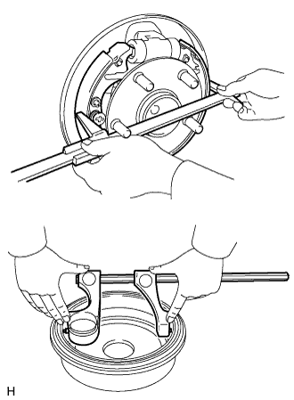
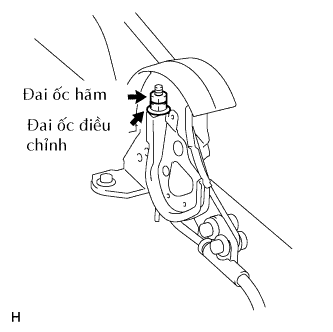
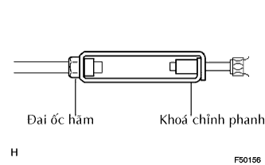
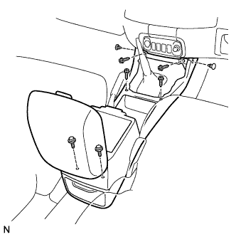

CÁP PHANH TAY > LẮP |
| 1. LẮP CỤM CÁP PHANH TAY NO.3 |
Lắp cáp bằng 4 bu lông A và đai ốc B.
Lắp kẹp No.3 có dấu C.
Lắp cáp vào cần guốc phanh tay bên trái và tấm bắt lưng phanh trái.
Lắp cáp vào tấm bắt lưng phanh bằng 2 bu lông.
Lắp cáp vào cần phanh. (Xem trang Kích chuột vào đây).
| 2. LẮP CỤM CÁP PHANH TAY NO.2 |
Lắp cáp bằng 4 bu lông A.
Lắp cáp vào cần guốc phanh tay bên phải và tấm bắt lưng phanh phải.
Lắp cáp vào tấm bắt lưng phanh bằng 2 bu lông.
Lắp cáp vào cần phanh. (Xem trang Kích chuột vào đây).
Lắp cáp vào bộ cân bằng B.
Lắp cao su cách nhiệt No.2 bằng 2 bu lông.
| 3. LẮP CỤM CÁP PHANH TAY NO.1 |
Lắp cáp vào cần phanh tay. (Xem trang Kích chuột vào đây).
Lắp cáp bằng bu lông A.
Lắp cáp vào bộ cân bằng B.
Nối cáp vào cáp No.3.
Lắp chốt và kẹp No.1 có dấu C.
Lắp cáp vào giá đỡ cáp D.
Lắp cao su cách nhiệt No.1 bằng 2 bu lông.
| 4. KIỂM TRA LẮP RÁP CỦA TRỐNG PHANH SAU |
Kiểm tra rằng các chi tiết đã được lắp chính xác.
|  |
Đo đường kính trong của trống phanh và đường kính của các guốc phanh. Kiểm tra rằng sự sai lệch giữa các đường kính là khe hở guốc chính xác.
| 5. LẮP CỤM TRỐNG PHANH SAU |
| 6. ĐIỀU CHỈNH KHE HỞ GUỐC PHANH |
| 7. LẮP BÁNH XE SAU |
| 8. ĐIỀU CHỈNH HÀNH TRÌNH CẦN PHANH TAY |
|  |
Vặn đai ốc điều chỉnh cho đến khi hành trình cần phanh tay chính xác.
Kéo cần phanh tay lên trên với một lực xấp xỉ 200 N (20 kgf, 44 lbf) và tính số tiếng kêu tách
Xiết chặt đai ốc hãm.
| 9. ĐIỀU CHỈNH KHOÁ QUAY CHỈNH PHANH TAY |
|  |
Nới lỏng đai ốc hãm và vặn khoá chỉnh phanh tay cho đến khi hành trình cần phanh tay chính xác.
Xiết chặt đai ốc hãm.
| 10. LẮP HỘP DẦM CÔNG XÔN |
|  |
Lắp hộp dầm bằng 2 vít.
Lắp 4 vít và 2 bulông.
| 11. NỐI CÁP VÀO CỰC ÂM ẮC QUY |
| 12. TIẾN HÀNH THIẾT LẬP BAN ĐẦU |
Tiến hành thiết lập ban đầu (Xem trang Kích chuột vào đây).